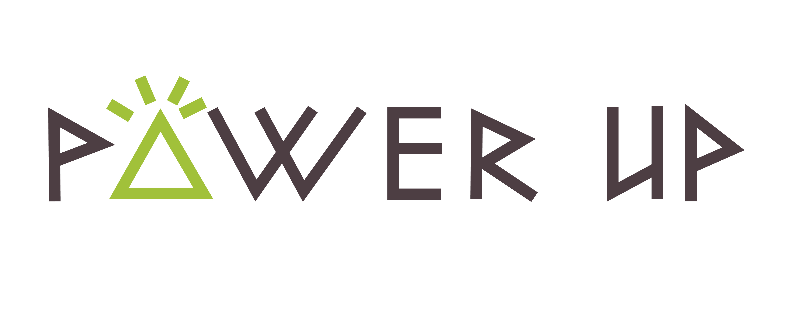
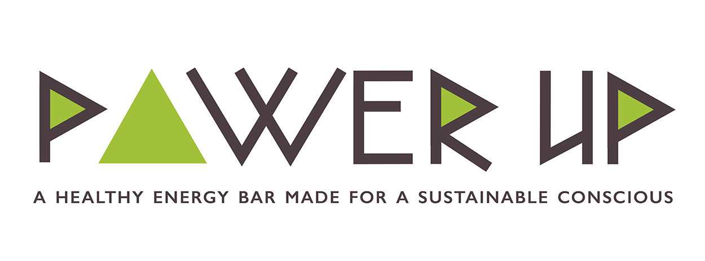
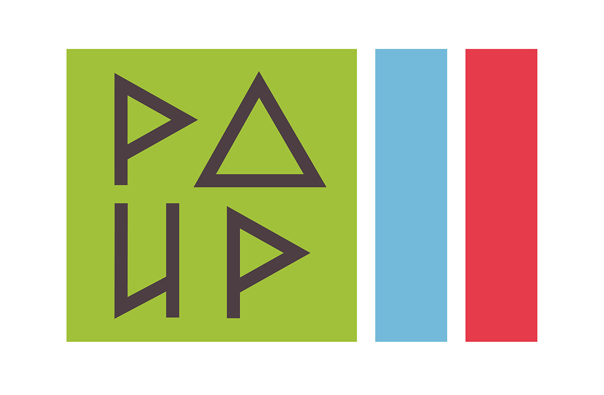
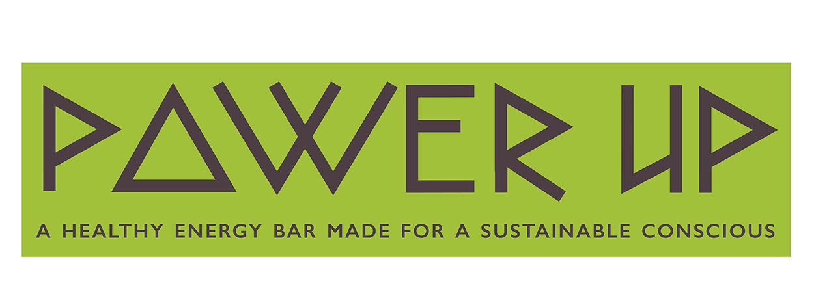

Power Up
Based on a company centered around living a healthy, sustainable and energetic life, Power Up is a fictitional company that needed a logotype, expressing it's core values. This design is not yet finished. However, the concpet is based on a tribal or Native American style. Who else to embody these core values but the original settlers living in America. They were adamant about using efficient energy and food resources while living off the land and carried out very active lifestyles. This idea was the foundation for the handmade type and hieroglyphics icon.
Graphic Design Fall 2014



